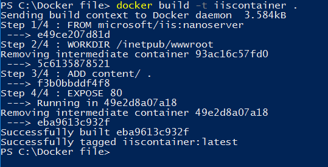
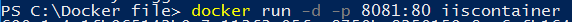
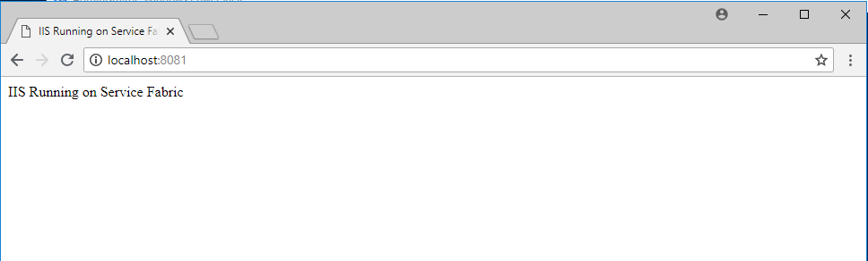
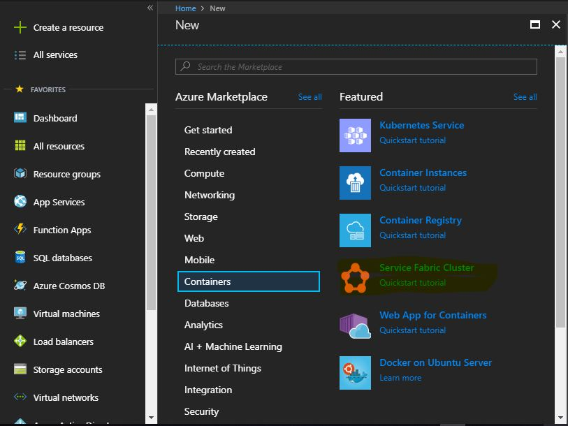
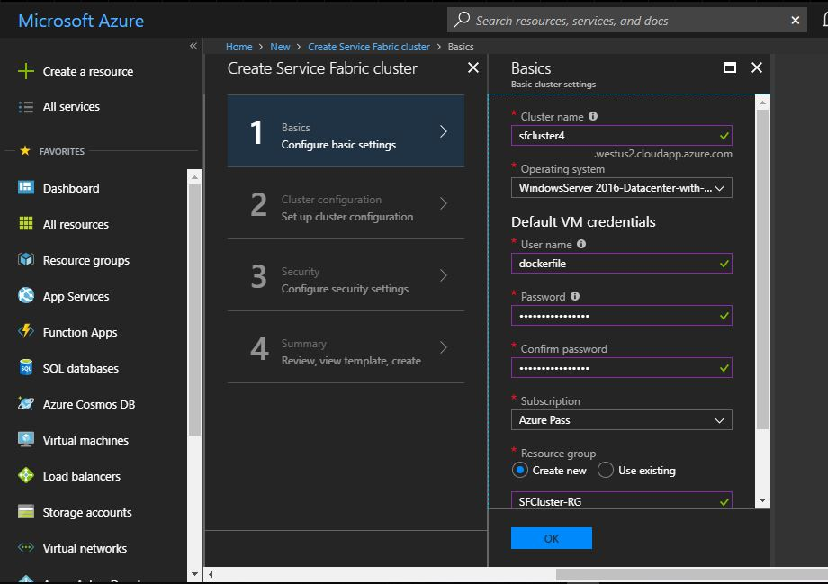
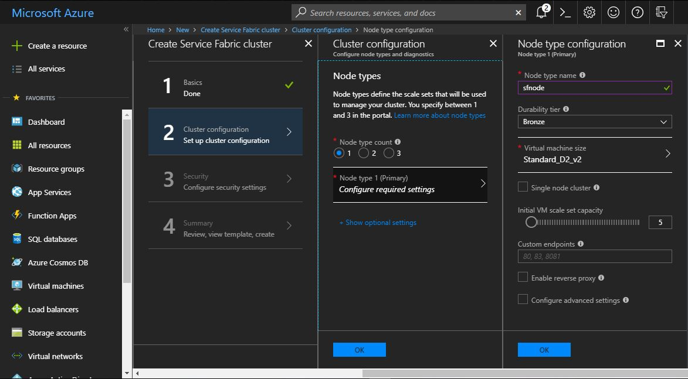
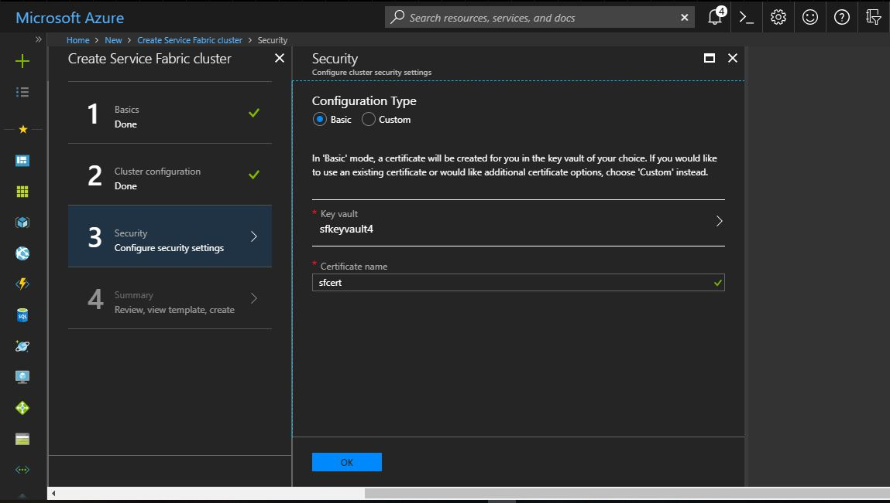
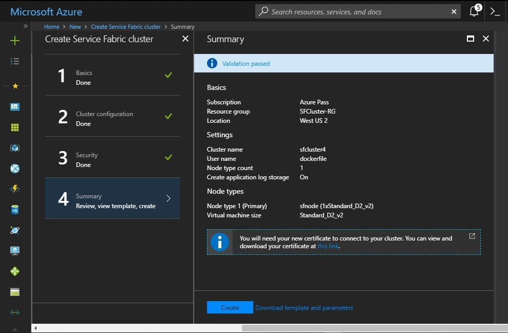
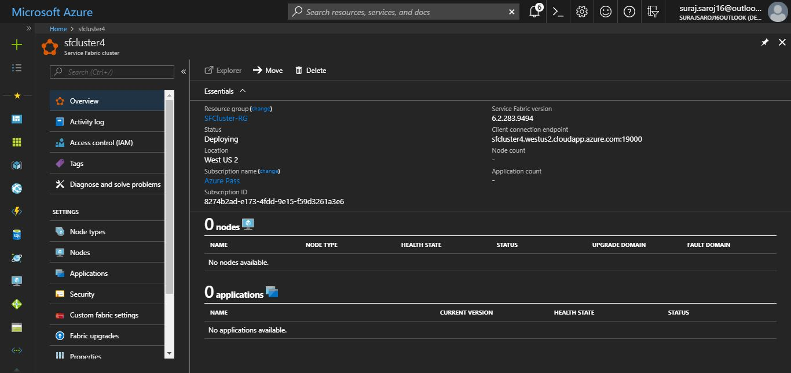

Azure Service Fabric is a distributed systems platform that makes it easy to package, deploy, and manage scalable and reliable microservices and containers.
This notes covers basic of how to run a IIS web server inside a container on Microsoft Azure cloud .
#1 Getting IIS Containers ready
Create a folder named "content",add an HTML file containing following code
Save it as Index.html
Next Step is to make a dockerfile in that same directory
Create a file named Dockerfile without any extension and add the following lines
#Start
FROM microsoft/iis:nanoserver #Base Image
WORKDIR /inetpub/wwwroot
ADD content/ . #Adding content folder to site folder
EXPOSE 80 #Exposing container port to host port
Now run the following command in powershell and make sure powershell points to the directory in which dockerfile resides.

If every thing is corrent then the output should look like this.

IF you want to see your docker image in action run the following command

Now navigate to Localhost:8081 in browser.

#2 Creating ServiceFabric Cluster on Azure
Log in to your azure account and follow the steps
Click on service fabric cluster

Fill in all the details as per your needs

Select VM Size,Node size

Create a keyvault to connect to SF VM's

Click Create to start provisioning your Service Fabric Cluster

After few minutes you should see some thing like this.
So you have your SF cluster up and running next step is to create a deployment package which will be used to deploy containers to SF Cluster.